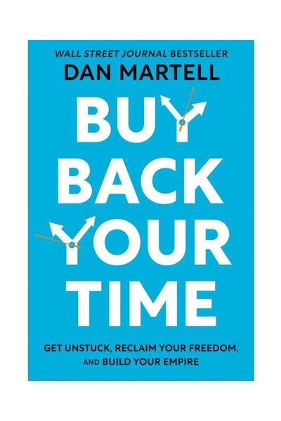

Library › Business & Startups
Buy Back Your Time — Summary & Key Lessons

Get unstuck, reclaim your freedom, and build your empire — by buying back time instead of grinding it away.
📖 OPEN THE FULL INTERACTIVE BREAKDOWN →🌐 Read it in Hindi, Hinglish, Gujarati, Tamil & 22 more languages — free, with audio.
💡 The Big Idea
Most founders build a job, not a company — they hire to fuel growth, drown in management, and hit the 'Pain Line' where the business runs on their exhaustion. Martell's flip: the Buyback Principle — hire to BUY BACK YOUR TIME, not to grow. The tool is the Buyback Rate: your effective hourly value (roughly annual income ÷ 2,000, ÷ 4 for the delegation threshold) — any task below that rate is stealing from you. Run a Time & Energy Audit: two weeks of tracking every task, graded by dollar value and energy (does it light you up or drain you?). Then climb the Replacement Ladder: Admin (email, calendar) → Delivery → Marketing → Sales → Leadership, delegating each level with 'Camcorder method' SOPs (record yourself doing it) and the 10-80-10 rule (you do the first 10% — vision — and last 10% — polish; they do the 80%). The endgame is the '10X vision' funded by your reclaimed hours: a founder working IN their zone of genius, on things that energize them, forever.
🧠 The 6 Key Lessons
Lesson 1: The Buyback Rate: Price Every Hour You Spend
Chapters 1-3: The Buyback Principle
Calculate your Buyback Rate: take your annual income, divide by 2,000 (working hours), then divide by 4 — that's your delegation threshold. Earning ₹40 lakh? Your rate is ~₹2,000/hr, threshold ₹500/hr. Every hour spent on tasks a ₹500/hr person could do — inbox, scheduling, invoices, formatting, errands — is an hour STOLEN from the ₹20,000/hr work only you can do: strategy, key relationships, product vision. This isn't arrogance; it's arithmetic. The Pain Line is where founders stall: revenue grows until the founder becomes the bottleneck, then the founder responds by working MORE — which deepens the trap, because the business is now structurally addicted to their hours. The escape isn't grinding harder or selling the company (the two fantasies at the Pain Line); it's systematically transferring everything below your threshold to people who do it better and cheaper — starting TODAY, at whatever scale you can afford, even 5 hours a week of a virtual assistant.
📖 Example: Martell's own crash: his first real company, Spheric, grew while he answered every email, joined every call, fixed every bug — until he was the constraint on everything and resentful of the company he'd dreamed of. His mentor's question rewired him: 'What's… Read the full example →
⚡ Do this: Calculate your buyback rate right now (income ÷ 2,000 ÷ 4). Then list yesterday's tasks and mark every one below the threshold. That marked list is your first hire's job description — even if the 'hire' starts as 5 hrs/week of a VA.
Lesson 2: The Time & Energy Audit: Find the $10 Tasks Eating Your $10,000 Days
Chapters 4-5: The Audit
For two weeks, track your time in 15-minute blocks (a notebook works). Then grade every task on two axes: VALUE (what would it cost to have someone else do this — ₹100/hr work or ₹10,000/hr work?) and ENERGY (green = lights you up, red = drains you). Four quadrants emerge. Low-value/draining = DELEGATE IMMEDIATELY (this quadrant is usually 30-50% of a founder's week — the audit's great horror). Low-value/energizing = hobby work disguised as work; enjoy some, but know it's dessert. High-value/draining = delegate NEXT or redesign (often sales ops, people management — the stuff that pays but empties you). High-value/energizing = your ZONE OF GENIUS — the audit's entire purpose is to move your week into this box, because a founder spending 80% of hours here doesn't just earn more, they last longer: burnout isn't caused by hours, it's caused by hours in the red quadrants.
📖 Example: Martell's client pattern: a SaaS founder audits two weeks and discovers 11 hours on email triage, 6 on scheduling, 5 on customer-support escalations, 4 on bookkeeping — 26 hours of sub-₹800/hr work from a founder whose strategic hours were worth 50x that.… Read the full example →
⚡ Do this: Start the audit tomorrow morning: every 15 minutes, one line. After two weeks, color-code value and energy. Count the hours in the delegate-immediately quadrant, multiply by your buyback rate — that number is what your current setup costs you per week.
Lesson 3: The Replacement Ladder: Fire Yourself Level by Level
Chapters 6-8: The Ladder
Delegate in the right ORDER. Rung 1: ADMIN — an executive/virtual assistant owning your inbox and calendar (the highest-ROI hire in existence; if someone else schedules your life, you stop being interruptible). Rung 2: DELIVERY — the doing of what you sell (developers, designers, service delivery). Rung 3: MARKETING — content, campaigns, lead flow. Rung 4: SALES — the calls, the follow-ups, the closes. Rung 5: LEADERSHIP — managers who run the teams, leaving you a true CEO. Each handoff uses the CAMCORDER METHOD: record yourself doing the task three times (screen-record, narrate decisions), have the hire write the SOP from the recordings, then own it — beats writing manuals nobody reads. And apply 10-80-10: you contribute the first 10% (direction, standards) and final 10% (review, polish); they own the 80% middle. You keep 90% of the quality for 20% of the time — and their 80% improves every cycle until your 10s shrink too.
📖 Example: The classic founder mistake Martell hammers: hiring a salesperson first because 'sales grows revenue' — while the founder still does their own calendar, delivery QA, and marketing. The new salesperson books meetings the founder must prep, sells work the… Read the full example →
⚡ Do this: Identify your current rung (be honest: if you still manage your own inbox, you're on rung 1). Make the rung-1 hire this quarter. Before onboarding, camcorder your 5 most repeated tasks — that's their first-week curriculum.
Lesson 4: Buy Back, Then Reinvest: The 10X Vision and the Perfect Week
Chapters 12-14: The Reinvestment
Buying back time and refilling it with more grunt work is just expensive treading. The reclaimed hours have three legitimate destinations: your ZONE OF GENIUS (the high-value/energizing work that compounds — product vision, key partnerships, craft), your 10X VISION (Martell's exercise: write the version of your life and business 10x bigger — not because you'll hit it on schedule, but because a 10x goal filters decisions differently than a 2x goal; 2x can be grinded, 10x forces reinvention), and your LIFE (the 'Perfect Week' exercise: design your ideal week on a blank calendar — workouts, family dinners, deep-work blocks, actual weekends — then migrate reality toward it block by block). The 'Preloaded Year' seals it: book the year's vacations, family events, and learning weeks into the calendar BEFORE the business fills it — because whatever gets scheduled first wins, and for most founders that's currently everyone else's priorities.
📖 Example: Martell's transformation stats from coaching hundreds of SaaS founders: the ones who complete the ladder typically move from 70-hour weeks at the Pain Line to 40-hour weeks at higher revenue — not by magic, but because a founder doing ONLY zone-of-genius… Read the full example →
⚡ Do this: Do the Perfect Week exercise this Sunday: blank calendar, design the ideal week as if the business obeyed you. Compare with reality, pick the two biggest gaps, and preload next month's calendar with those two blocks before Monday's requests arrive.
Lesson 5: The Buyback Rate Multiplier: Know Your Time's True Price
Part 2: The Framework
McGrath's sharpest tool: the buyback rate — the hourly rate you'd pay someone to do tasks for you. The rule: if you can hire someone for less than your buyback rate, buying back that hour is a good deal; if the task is worth more than the rate, do it yourself. Most people fail this test because they price their time by their salary, not by their true value — and they forget the multiplier: the hour you spend on a ₹500 task isn't just worth ₹500, it's an hour stolen from the ₹5,000 work only you can do. The math gets dramatic for business owners: buying back ten hours a week at a fraction of your rate compounds into years of freedom.
📖 Example: McGrath tells of entrepreneurs who resisted hiring a virtual assistant at ₹300/hour while their own hourly value was ₹5,000 — spending 10 hours a week on scheduling, inbox and admin that an assistant could do better. The buyback rate math made the hire a 10x… Read the full example →
⚡ Do this: Calculate your true hourly rate (annual value ÷ 2,000). List the tasks you did this week below that rate — and pick ONE to buy back or delegate this month.
Lesson 6: The Time & Energy Audit: Where Your Hours Actually Go
Part 3: The Audit
Before you can buy back time, you must know where it leaks. McGrath's audit is brutally simple: for one week, log every hour (and every 15-minute block) against a short list of categories — high-value work, low-value admin, consumption, family, sleep, recovery. The results always surprise: people discover 15-20 hours a week of 'invisible' time — scrolling, commuting, meetings that could have been emails, tasks they do that someone else could do at 1/10 the rate. The audit converts vague 'I'm so busy' into a precise map, and the map reveals the first buybacks. You can't optimize what you haven't measured — the audit is where freedom starts.
📖 Example: McGrath describes clients who swore they had 'no time' until the audit revealed 2 hours of morning scrolling, 4 hours of low-value meetings, and 3 hours of manual tasks that cost less than their hourly rate to delegate. The audit didn't create time; it… Read the full example →
⚡ Do this: Run a 7-day time audit this week: every evening, log your day in 4 buckets (high-value, admin, consumption, recovery). Total the buckets on day 8 and find your first buyback.
✅ 5-Step Action Plan
- Calculate your buyback rate (income ÷ 2,000 ÷ 4) and refuse tasks below it.
- Run the two-week Time & Energy audit; count the cost of your delegate-now quadrant.
- Climb the ladder in order: EA/admin first, leadership last — camcorder every handoff.
- Apply 10-80-10 on everything delegated: you do vision and polish, they own the middle.
- Preload your calendar with the Perfect Week and the year's life events — business fills in around life, not the reverse.
⚠️ When This Doesn't Work
Delegation is the right instinct — and HP-Autonomy is its $11 billion cautionary tale: HP bought Autonomy because they wanted to buy back time and capability, and delegated the diligence so completely that nobody verified the numbers until $8.8 billion had evaporated in write-downs and fraud allegations. Buying back time from people you haven't verified is how you buy problems you can't see. Delegate the work, never the verification.
💀 The Graveyard Proves It
🖨️ HP + Autonomy — Paid $11B, Wrote Off $8.8B Within a Year. Burn: $8.8B writedown — 79% of the price. Read the full case study →
💬 Best Quotes from Buy Back Your Time
- “Don't hire to grow your business. Hire to buy back your time.”
- “If a task can be done at less than your buyback rate, it's costing you money to do it yourself.”
- “You don't have a time problem. You have a transfer problem.”
Interactive version: mark lessons as read, listen in your language, share quote cards.